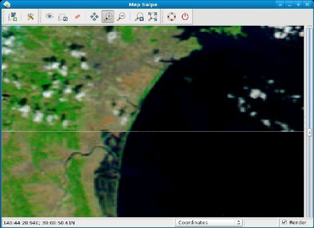

DESCRIPTION
The Map Swipe is a wxGUI component
which allows the user to interactively compare two raster maps of the same
area by revealing different parts of the raster maps.
It is useful e.g. for comparing raster maps from different time periods.
Map Swipe can be launched from the menu File -> Map Swipe.
Map Swipe allows you to:
- switch orientation of the swipe line (horizontal or vertical)
- zooming, panning
- automatically load maps when opening Map Swipe with two selected raster maps in Layer Manager
- save display to graphics file
- display text labels with map names
- choose between 'swipe' mode (default) and 'mirror' mode (synchronized maps displayed side by side)

Pre and post disaster images of the tsunami in Japan in 2011. The upper MODIS image
taken on February 26, 2011, shows the coastline under normal conditions while the lower
MODIS image on March 13, 2011, shows a clear view of tsunami flooding along the coastline.
Water, black and dark blue in these false-color images, still covers the ground as much
as five kilometers (three miles) from the coast.
Source: Earth Observatory/NASA
SEE ALSO
wxGUI
wxGUI components
g.gui,
g.gui.animation,
g.gui.dbmgr,
g.gui.gmodeler,
g.gui.iclass,
g.gui.psmap,
g.gui.rlisetup,
g.gui.vdigit
See also the user wiki page.
AUTHOR
Anna Kratochvilova,
Czech Technical University in Prague, Czech Republic
$Date: 2012-03-07 13:21:57 +0100 (Wed, 07 Mar 2012) $